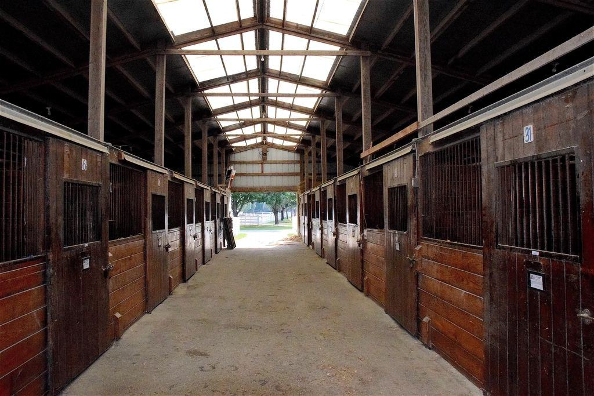
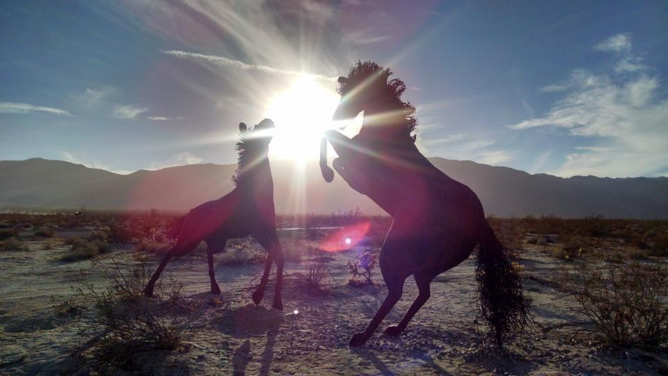
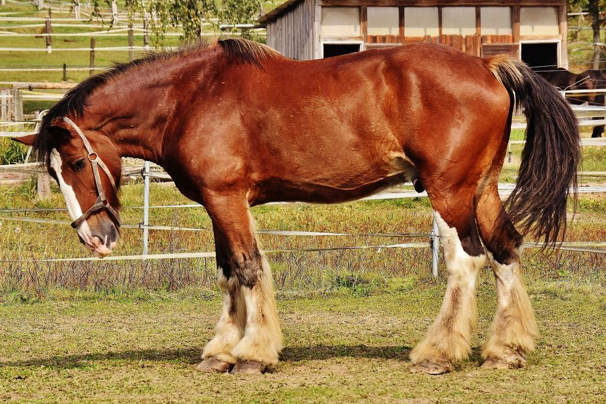
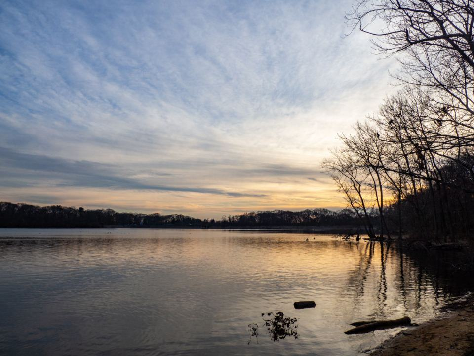
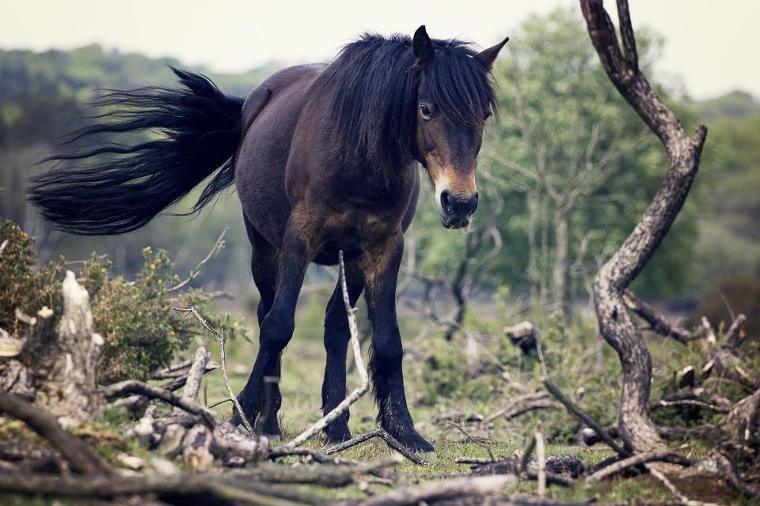
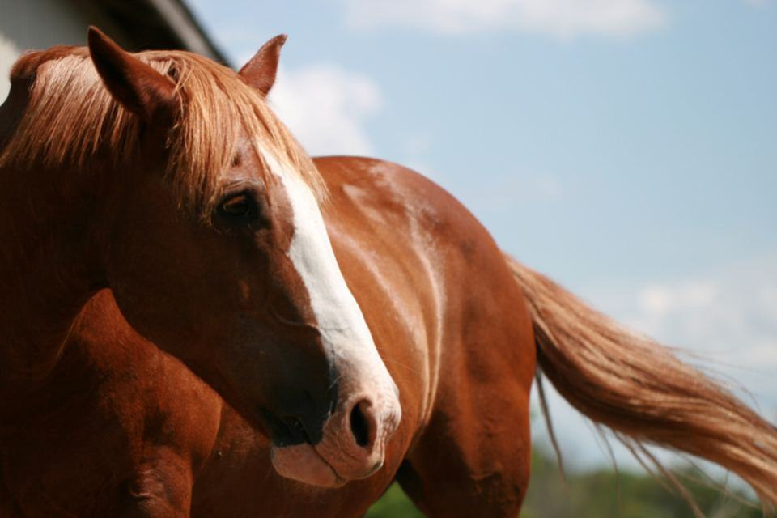
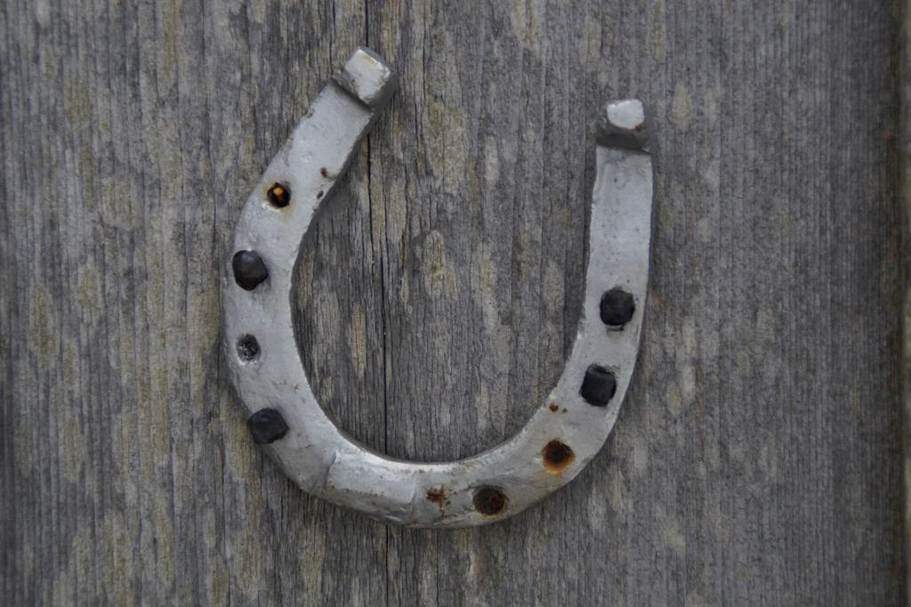

Tjänster
Vi är tolv personer: åtta hovslagare, en smed, en fysioterapeut för häst och två på kontoret. Vi tar högst 45 hästar per hovslagare, vilket gör att vi kan komma med kort varsel och följa med på tävlingar utan att andra kunder blir lidande.
Vad står på hästens tävlingsplan?

Hopphästar
Hopphästar landar med flera ton på framhovarna. Vi skor med fokus på brytning, stöd i trakterna och broddhål som passar både sand och gräs.
Inför gräsbanorna i Falsterbo i juli går vi igenom broddval med varje ryttare.

Dressyrhästar
I dressyren märks varje millimeter i takten. Vi balanserar hovarna efter videoanalys och provar vikt och skolängd tillsammans med ryttare och tränare.
Inför domarbedömning skor vi minst fem dagar före start.
Tävlingsservice i Europa
Ett trettiotal gånger per år följer en av oss med ekipage på utlandstävlingar. Vi har eget lager i bilen och arbetar i tävlingsstallet.
Resa och logi delas mellan de ekipage som har bokat samma tävling.

Unghästar och import
Unga hästar på väg in i tävling och hästar som köps från Tyskland, Belgien och Nederländerna får en noggrann genomgång.
Vi kontaktar säljarens hovslagare för att få hästens historik.
Från första möte till start
- 1

Möte i stallet
Henrik eller en av lagledarna träffar ryttaren, ser hästen gå och läser veterinärjournalen.
- 2

Hovslagare och plan
Hästen får en personlig hovslagare och en skoningsplan som följer tävlingskalendern.
- 3

Skoning med video
Hästen filmas före och efter, och journalen uppdateras med bilder och mått.
- 4

Med till start
Inför viktiga tävlingar kontrollerar vi skorna dagen före, eller följer med hela vägen.
Mästare, gesäller och fysio
- MästarbrevHenrik Wahlgren och två av lagledarna har mästarbrev i hovslageri.
- GesällbrevSamtliga åtta hovslagare har gesällbrev och minst fem års erfarenhet av sporthästar.
- Legitimerad fysioterapeutSara Möller är legitimerad fysioterapeut med vidareutbildning i hästens rörelseapparat.
- UtlandsförsäkringAnsvarsförsäkring som gäller vid arbete på tävlingar i hela Europa.